Tehilim
Les Psaumes de David sur iPhone, iPad et Android. Lecture quotidienne, chaîne de lecture collective, séquence personnalisée, traduction française — pensé pour la prière, façonné pour le cœur.
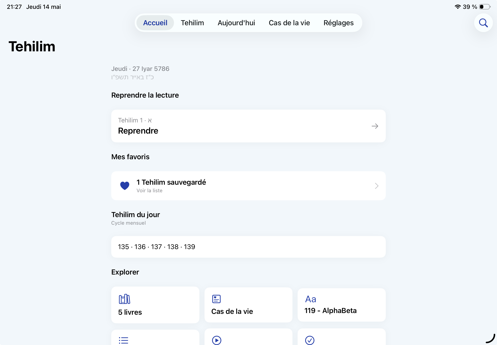
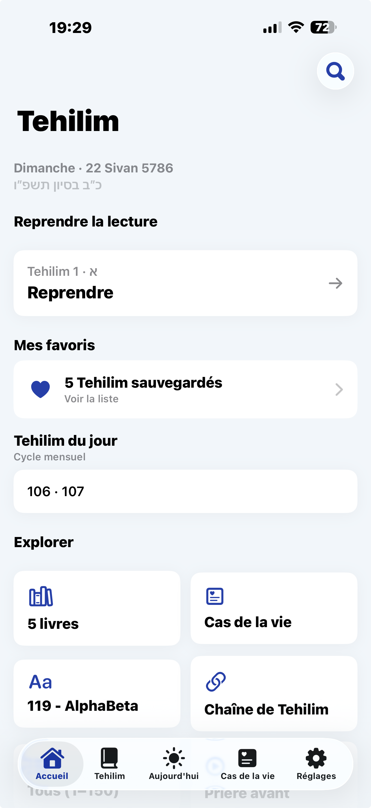
Tehilim est née pour porter le souvenir de Johann Meïr ben Sarah Bouganim — ce jeune homme dont l'histoire et le sourire ont inspiré tant de récits, jusqu'au film Hors Normes.
Chaque psaume lu dans l'application est offert pour l'élévation de son âme. Chaque lettre allumée est une bougie. Chaque prière devient un geste — pour lui, pour ceux qui restent, pour ceux qu'on aime.
De la lecture quotidienne aux séquences personnalisées, chaque détail est pensé pour accompagner la prière sans jamais la distraire.
Le cycle mensuel des Psaumes calé sur le calendrier hébraïque. Reprenez exactement où vous vous êtes arrêté — l'app retient tout, du jour à la lettre, du verset à la traduction.
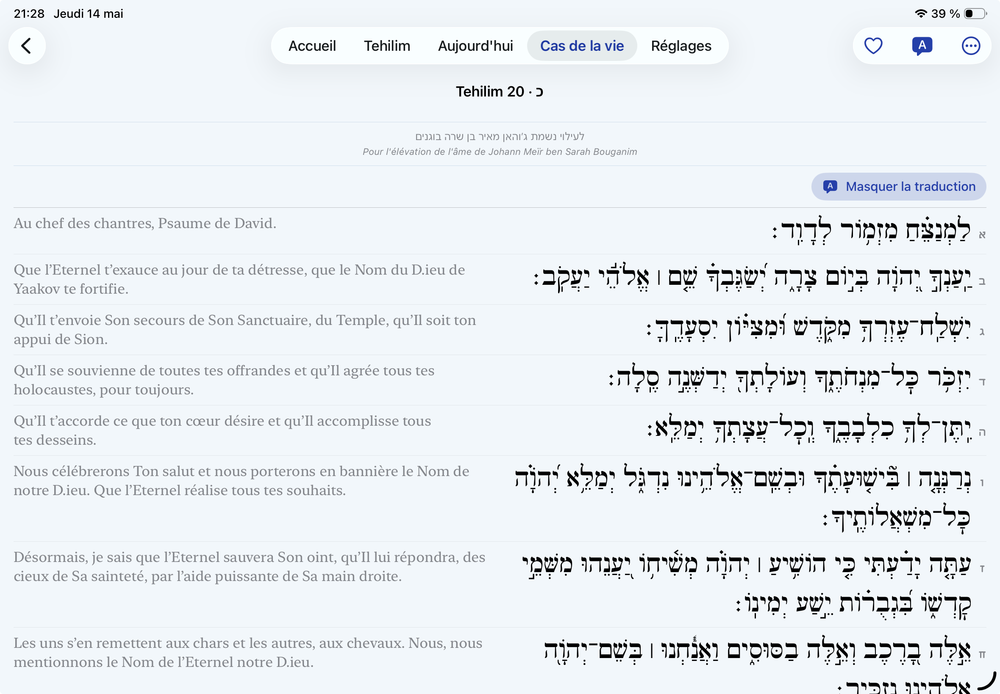
L'intégralité des 150 Tehilim, structurés selon la division traditionnelle en cinq livres. Hébreu ponctué, traduction française fidèle, navigation fluide.
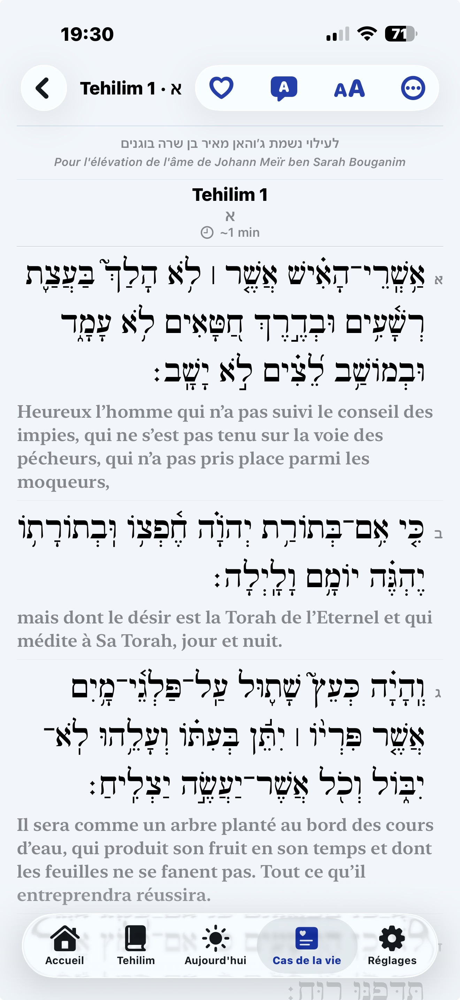
Mariage, naissance, guérison, parnassa, réussite, deuil… Pour chaque moment, une sélection traditionnelle de Tehilim, accompagnée des prières d'usage avant et après la lecture.
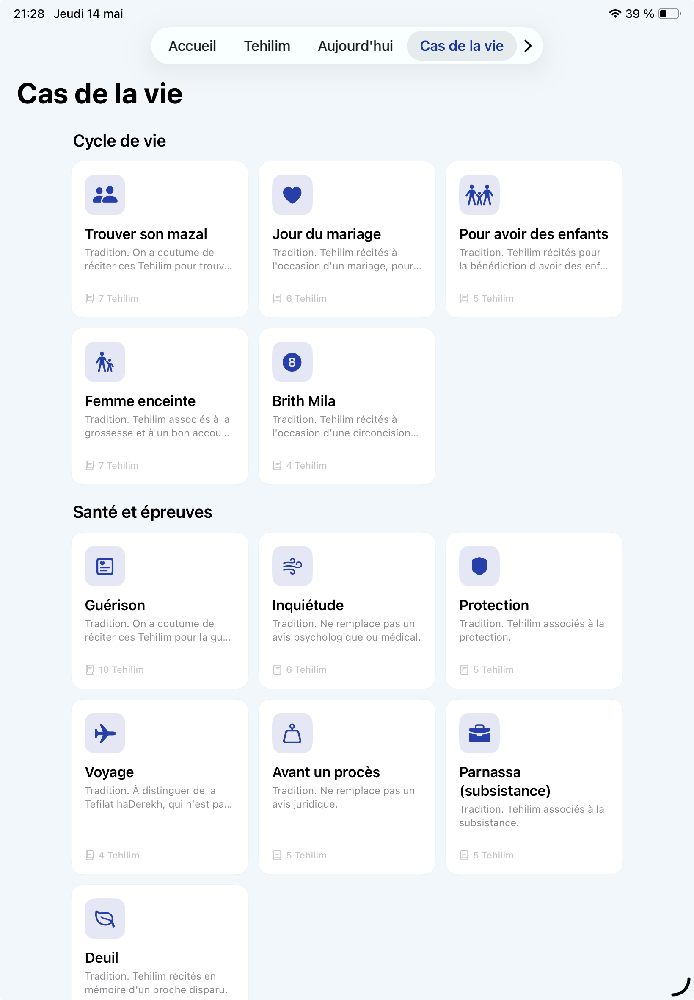
Composez une séquence de versets à partir d'un prénom : Refoua Cheléma pour une guérison, Lelouy Nichmat pour la mémoire d'un proche. L'app génère les lettres et leurs versets — et calcule la prochaine azcara, avec rappels 7 jours avant et le jour même.
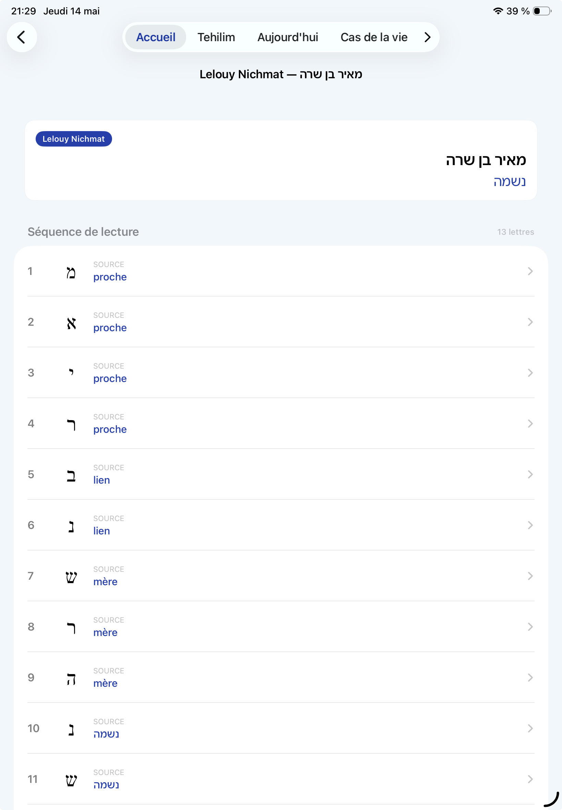
Une lecture collective en temps réel, pour une intention commune — Lelouy Nichmat, Refoua Chelema, ou la réussite d'un proche. Chacun choisit les Tehilim qu'il s'engage à lire, sans doublon, où qu'il soit.
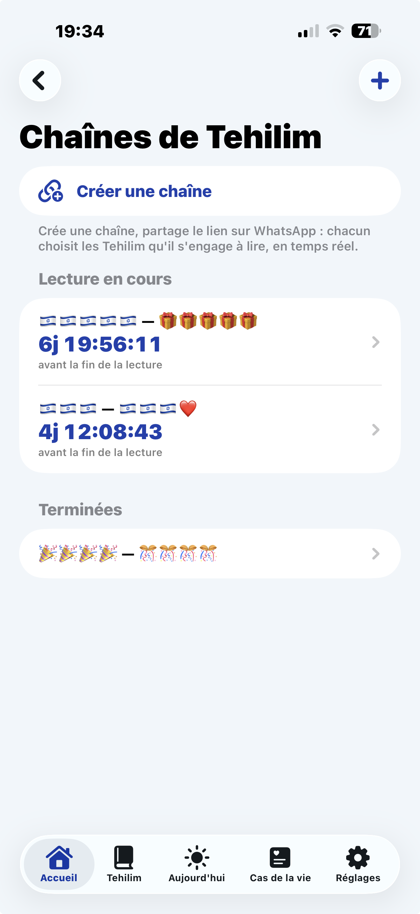
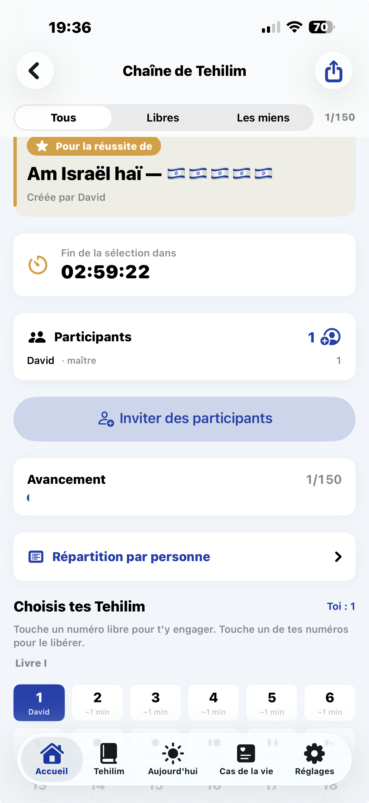
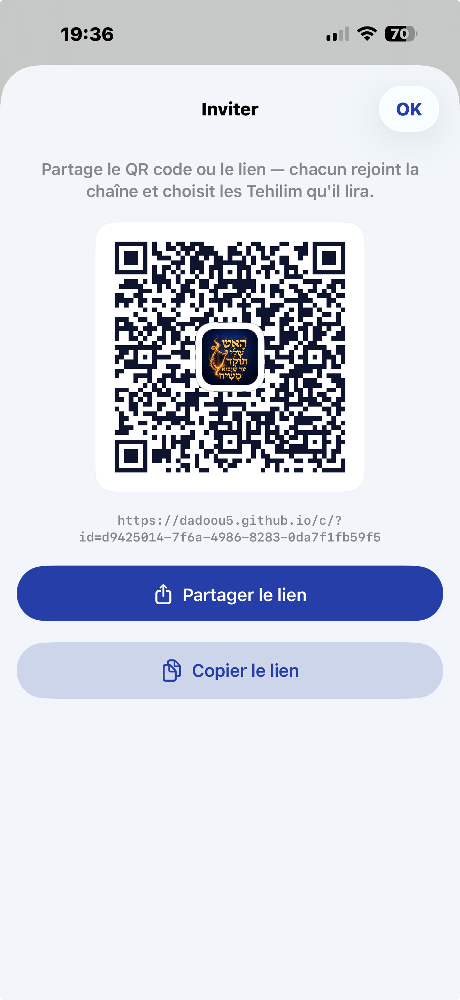
Donnez-lui un nom, une intention et un délai. La chaîne vit dans le cloud le temps de la lecture, puis s'efface d'elle-même.
WhatsApp, SMS ou QR code en présentiel : chacun rejoint en un tap, saisit son prénom et réserve ses Tehilim.
Suivez l'avancement en direct, recevez les notifications clés, et lisez vos Tehilim dans l'app — même hors-ligne.
Le plus long psaume du livre, structuré comme un alphabet. Survolez ou touchez chaque lettre pour parcourir ses huit versets — exactement comme dans l'application.
Que l'on récite Cha'harit à l'aube ou Maariv à la nuit tombée, l'interface s'adapte. Choisissez votre ambiance — l'app suit aussi automatiquement le mode système.
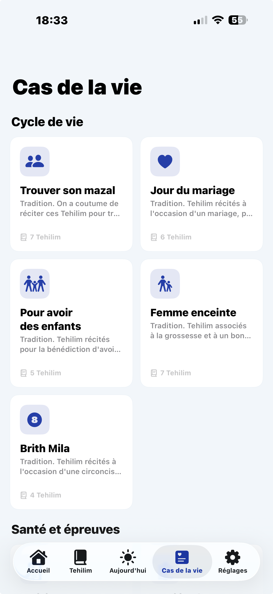
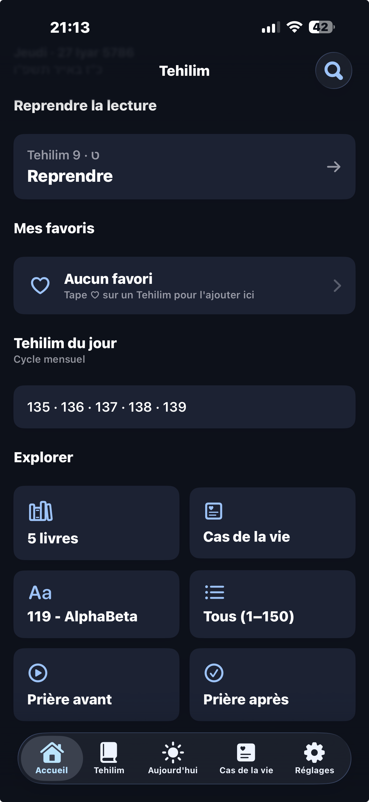
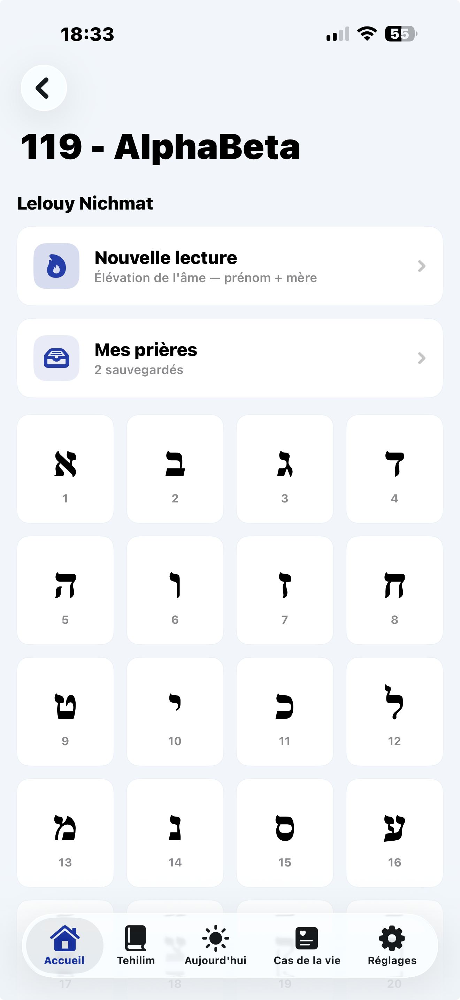
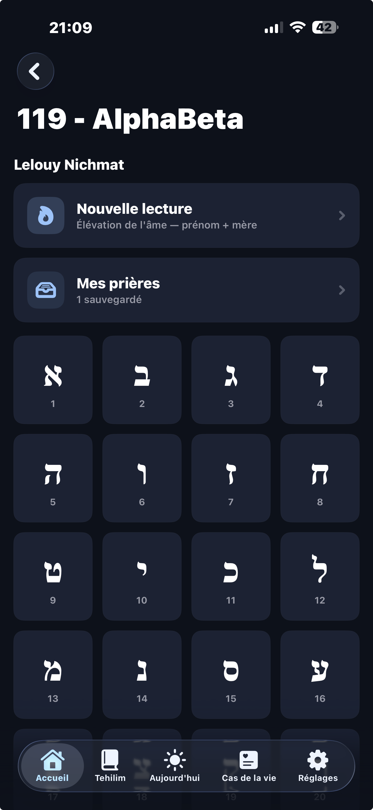
Un aperçu de la nouvelle version iOS — navigation, recherche, lecture, séquences personnalisées.
Gratuit sur iPhone, iPad et Android. Chaque lecture est un mérite pour l'élévation de l'âme de Johann Meïr ben Sarah Bouganim.